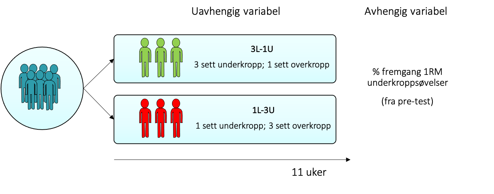

Chapter 2 Datasett (3 sett vs. 1 sett)
Et spørsmål mange treningsentusiaster lurer på er hvor mange serier som er best å gjennnomføre for å få maksimal treningseffekt i styrketrening. Noen mener at ett sett er tilstrekkelig, mens andre mener at et hardere treningstimuli er nødvendig og at to eller flere sett derfor er bedre. En forsker som var tidlig ute med å undersøke dette er deres egen Bent Rønnestad.
Eksperimentet ble gjennomført som et between-subject design med to grupper: en gruppe trente 1 sett på underkroppen og 3 sett på overkroppen; En annen gruppe trente 3 sett på underkroppen og 1 sett på overkroppen. Disse gruppene kalte han henholdsvis 1L-3U og 3L-1U (L=lower; U=Upper). De to gruppene trente 3 ganger i uken i totalt 11 uker. Forskerne ville så se hva som ga best fremgang på 1RM. Den avhengige variabelen ble derfor %-fremgang på 1RM på underkroppsøvelser. De fant at 3L-1U hadde større fremgang enn 1L-3U fra pre til post (41 vs 21 % endring). Denne forskjellen var signifikant ved en uavhengig t-test. Med andre ord kan det se ut til at det kan lønne seg å trene flere sett per styrketreningsøkt.
 Vi har ikke tilgang til dette datasettet, men jeg har simulert dette datasettet i R basert på verdiene jeg fant i artikkelen. Datasettet blir tilnærmet likt, men siden det er en simulering blir det aldri helt identisk. Datasettet ser du i tabellen under.
knitr::kable(
dat, booktabs = TRUE,
caption = 'Simulert datasett'
)| individ | gruppe | rm |
|---|---|---|
| 1 | tre.sett | 40.46704 |
| 2 | tre.sett | 49.07223 |
| 3 | tre.sett | 47.94131 |
| 4 | tre.sett | 44.51389 |
| 5 | tre.sett | 52.28750 |
| 6 | tre.sett | 40.01750 |
| 7 | tre.sett | 49.48425 |
| 8 | tre.sett | 29.21048 |
| 9 | tre.sett | 40.59293 |
| 10 | tre.sett | 37.58676 |
| 11 | tre.sett | 35.42651 |
| 12 | tre.sett | 42.49354 |
| 13 | ett.sett | 17.70576 |
| 14 | ett.sett | 17.07181 |
| 15 | ett.sett | 18.26811 |
| 16 | ett.sett | 25.42594 |
| 17 | ett.sett | 32.70313 |
| 18 | ett.sett | 19.10226 |
| 19 | ett.sett | 22.23827 |
| 20 | ett.sett | 22.27148 |
| 21 | ett.sett | 26.17889 |
| 22 | ett.sett | 20.34857 |
| 23 | ett.sett | 23.52773 |
| 24 | ett.sett | 17.95966 |
Du kan få nøyaktig samme datsett ved å klippe ut og lime inn følgende kode i en skript-fil i R (husk å laste inn tidyverse-pakken, library(tidyverse) ). Du kan også laste ned datasettet som en .csv fil fra canvas.
set.seed(2002) #viktig å ha med denne for å få nøyaktig samme datasett
tre.sett <- rnorm(n = 12, mean = 41, sd = 5) #12 individer
ett.sett <-rnorm(n = 12, mean = 21, sd = 5) #12 individer
#lager en tibble fra tidyverse-pakken. Må ha lastet inn tidyverse library(tidyverse) i scriptfilen
dat <- tibble(individ = seq(1:24),
gruppe = rep(c("tre.sett ", "ett.sett"), c(length(tre.sett), length(ett.sett))),
rm = c(tre.sett , ett.sett))Før du går videre er det greit at du gjør deg kjent med datasettet som vi har generert. Studer datasettet og svar på følgende spørsmål:
- Hvor mange kolonner er det i tabellen over?
- Hvor mange deltakere var med i studien?
- Hvilke to verdier kan variabelen gruppe? og
2.0.1 Regne gjennomsnitt for de to gruppene
Bra! Det er alltid viktig å bli kjent med sitt eget datasett, men nå som du har det kan vi gå videre. Vi er interessert i om det er forskjeller mellom de to gruppene (“tre.sett” vs. ett.sett) på % fremgang fra pre- til post-test. Så kanskje vi kan starte med å se om det er forskjeller i gjennomsnitt mellom to gruppene? Dette kan enkelt gjøres i R, Jamovi eller excel. Her er en kode for å gjøre dette i R:
#jeg lager et oobjekt som heter mean_rm
mean_rm <- dat %>%
#Jeg grupperer etter gruppe, slik at jeg får et mean for hver gruppe istf. for å få mean for alle individene
#group_by er en funksjon for dette
group_by(gruppe) %>%
#deretter bruker jeg summarise funksjonen for å regne gjennomsnitt
summarise(mean.fremgang.1RM = mean(rm))Koden gir oss følgende tabell:
| gruppe | mean.fremgang.1RM |
|---|---|
| ett.sett | 21.90013 |
| tre.sett | 42.42450 |
Hvilken gruppe hadde mest fremgang? mcq(c(“ett.sett,” answer = “tre.sett”))
2.0.2 Figur av datasettet
Vi kan også presentere dataen i en figur. En vanlig måte å gjøre dette på er å bruke et stolpediagram.
Figure 2.1: Here is a nice figure!
Et stolpediagram er pent å se på, men er egentlig designet for kategorisk data. For eksempel er det fint å bruke dette når vi skal presentere frekvensen antall som har kjørt bil til skolen og antall personer som har gått. Les Beyond Bar and Line Graphs: Time for a New Data Presentation Paradigm, og svar på følgende spørsmål:
knitr::include_app("https://cmagelssen.shinyapps.io/test/",
height = "600px")Figure 2.2: CAPTION THIS FIGURE!!